A Dynamical Model of Immune-System Response to mRNA, Live Virus, and Inactivated Vaccines

Note: This post was originally a short technical article I shared on the Wolfram Community forum. For an interactive experience with live demonstrations or to download this text and source code as a Wolfram Notebook, please visit the original post here.
Source article: Zhaobin Xu, Jian Song, Hongmei Zhang, Zhenlin Wei, Dongqing Wei, Jacques Demongeot, A Mathematical Model Simulating the Adaptive Immune Response in Various Vaccines and Vaccination Strategies, medRxiv 2023.10.05.23296578. DOI: https://doi.org/10.1101/2023.10.05.23296578
Introduction:
The accomplishments of vaccination are numerous, leading to significant advances in human health. Yet new infectious diseases and evolving pathogens constantly challenge our understanding of vaccine efficacy and immunity. Mathematical modelling is a crucial lens through which we can reach a more comprehensive understanding of these complexities. By simulating the biological responses to vaccines, models can provide critical insights into disease progression, vaccine performance, and optimal strategies for developing vaccines.
Setup
Dependencies
We will make use of the CompartmentalModelling paclet. You can install and load the paclet like so:
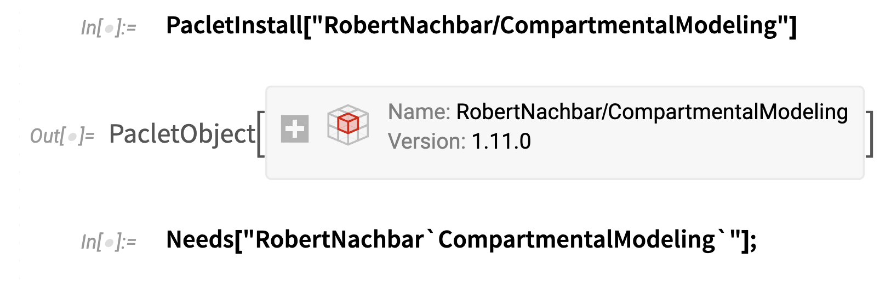
You can find documentation for this paclet by following this link.
Paper Tables
You can find the definitions for the tables of reactions, reaction variables, and reaction parameters in the original version of this post on Wolfram Community.
Reactions, Parameters, and State Variables of the Model
The authors of the paper helpfully provide three tables fully specifying the interactions between state variables (components) of the system, as well as model parameters and initial conditions. I have reproduced these tables below. Note that some parameter values and initial conditions depend on the selected vaccine treatment type. More precisely:
- The replication rate of viral antigens, described by parameter k_14 should be set to .3 in the case of a simulation of an attenuated live virus vaccine, and 0 otherwise.
- The initial condition of the state variable x_2 (Antigen) should be set to 10^6 for simulation with an inactivated vaccine, 0 with an mRNA vaccine, and 1 for an attenuated live virus vaccine.
- The initial condition of the state variable x_9 (mRNA) should be set to 0 for simulation with an inactivated or attenuated live virus vaccine, and 10^6 for and mRNA vaccine.
For a more in depth explanation of these parameters and initial conditions, please refer to the paper.
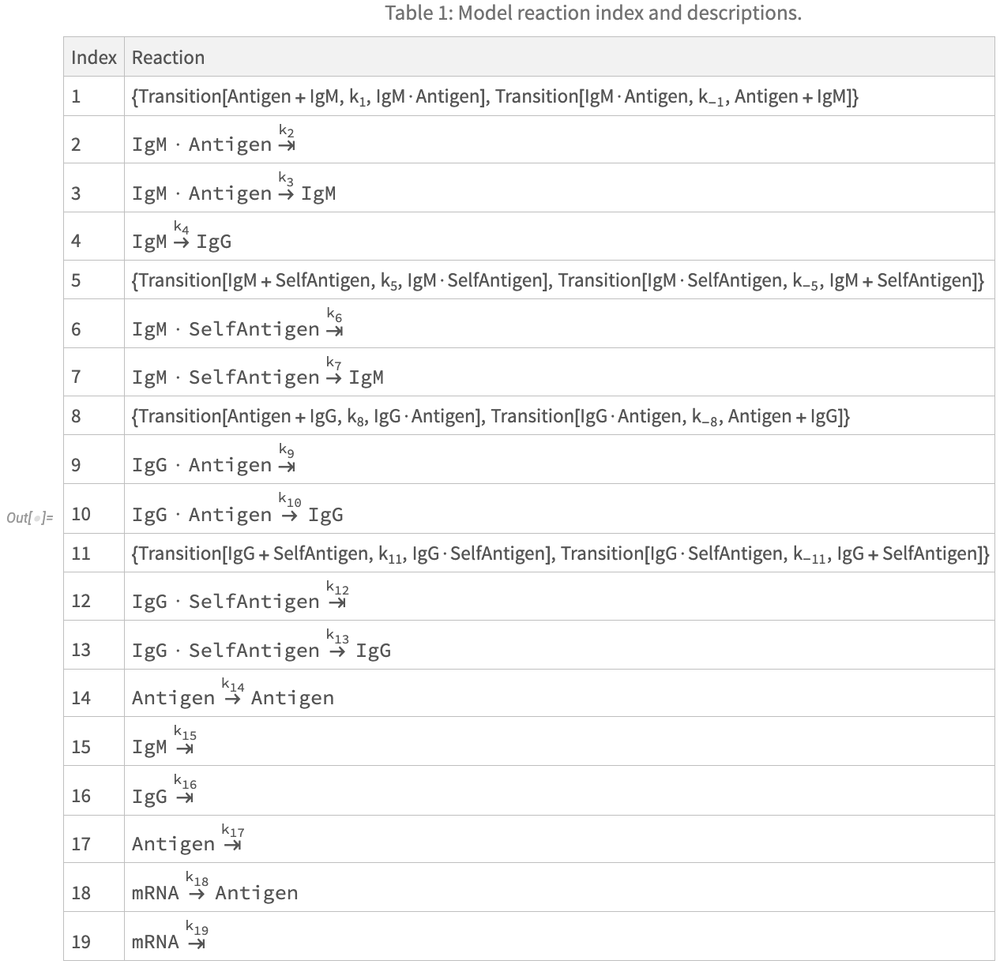
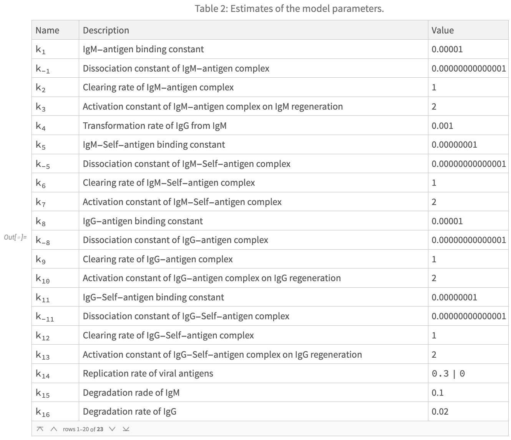
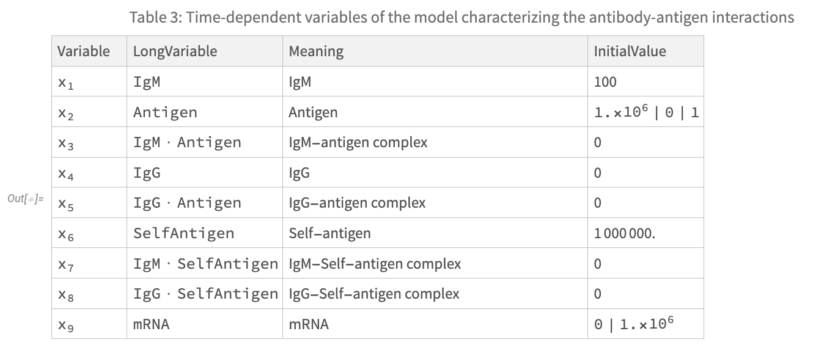
Extracting Model Information
We can use tools from the CompartmentalModelling paclet to extract useful information about the model. For instance, we can use CompartmentalModelGraph from the CompartmentalModelling paclet to visualise the model’s structure:
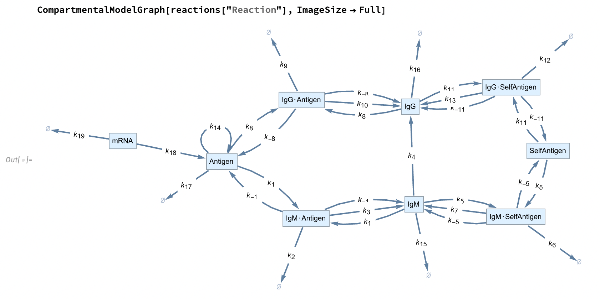
The CompartmentalModelling paclet contains convenient functions to streamline the process of building models. For instance, we can use KineticCompartmentalModel to generate differential equations for from a list of component transitions (the reactions).
Fetch the model data:
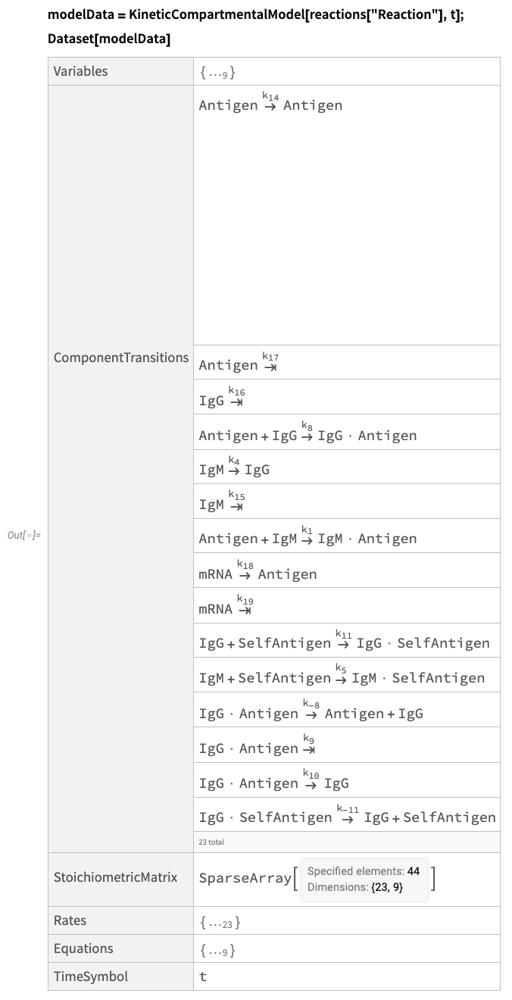
These data are very useful for quickly building and simulating compartmental models.
Numerical Simulations
Preparing Model ODEs
Owing to details related to the original code implementation of the model, the authors provide a slightly modified system of ODEs describing the model. This system is reproduced below and numerically approximated using NDSolve for different vaccine treatments:
Reproduce the ODEs from the paper:
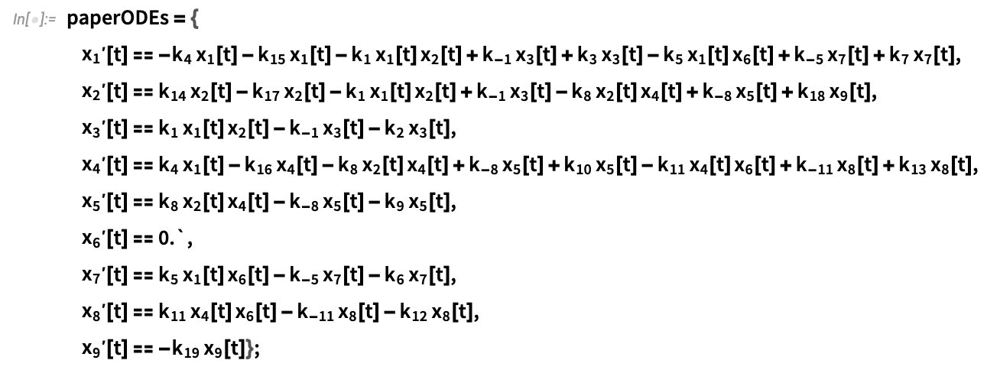
Let’s also get some replacement rules to easily convert between the variable names in plain English, and the symbols used in the paper for the model’s system of ODEs.
Plain English variables <--> ODE variables:
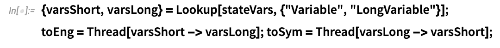
Vaccine Treatment Simulations
In the paper, the authors model three cases:
- Inactivated Vaccine Simulation
- Attenuated Live Virus Vaccine
- mRNA Vaccine
These cases are solved numerically in the three following sections. The inactivated vaccine and mRNA vaccines each take two injections, one at one at
1. Inactivated Vaccine Simulation
Model-specific parameters and initial conditions:
- Replication rate of viral antigens: k_14=0
- Antigen = x_2[0] = 10^6
- mRNA = x_9[0] = 0
Define model parameters corresponding to the inactivated vaccine setup:
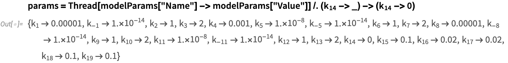
Define initial conditions of the system corresponding to the inactivated vaccine setup:
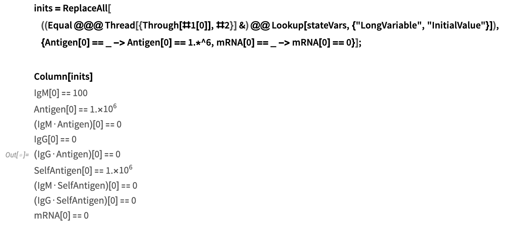
Construct the system of equations for NDSolve, with parameter values and initial conditions:
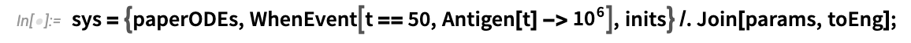
Solve numerically with NDSolve, from t=0 to t=100:
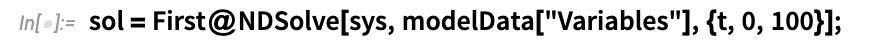
Plot the solution:
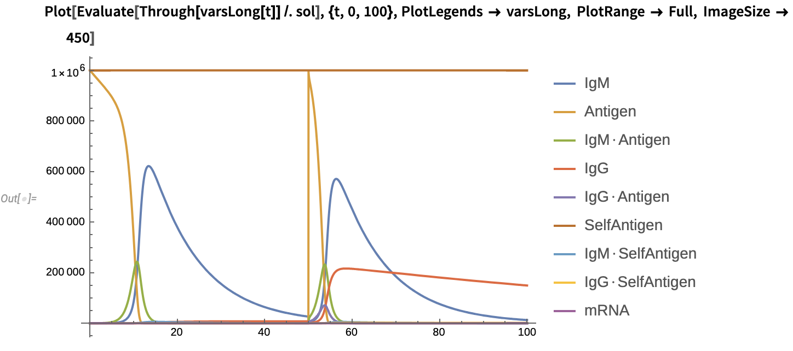
2. Attenuated Live Virus Vaccine
Model-specific parameters and initial conditions:
- Replication rate of viral antigens: k_14=0.3
- Antigen = x_2[0] = 1
- mRNA = x_9[0] = 0
Define model parameters corresponding to the inactivated vaccine setup:
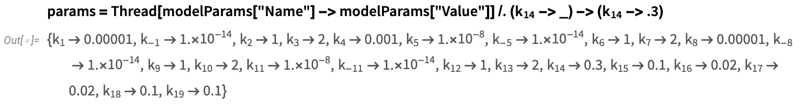
Define initial conditions of the system corresponding to the inactivated vaccine setup:
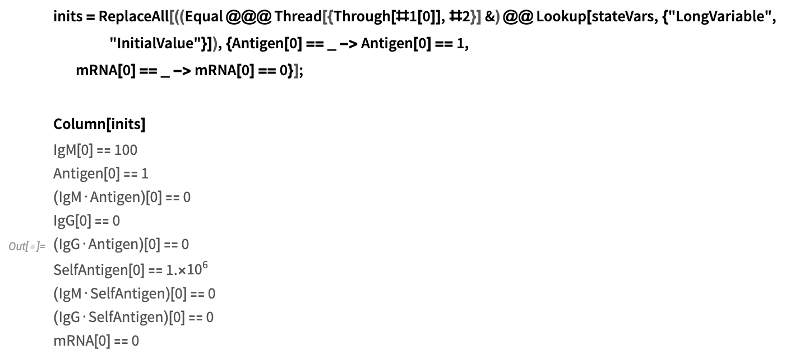
Construct the system of equations for NDSolve, with parameter values and initial conditions:
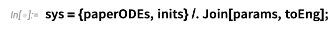
Solve numerically with NDSolve, from t=0 to t=100:
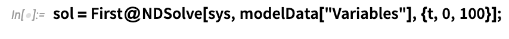
Plot the solution:
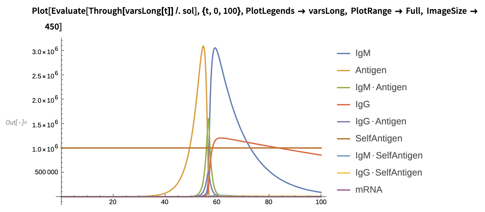
3. mRNA Vaccine
Model-specific parameters and initial conditions:
Replication rate of viral antigens: k_14=0
Antigen = x_2[0] = 0
mRNA = x_9[0] = 10^6
Define model parameters corresponding to the inactivated vaccine setup:
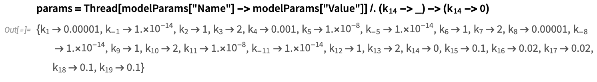
Define initial conditions of the system corresponding to the inactivated vaccine setup:
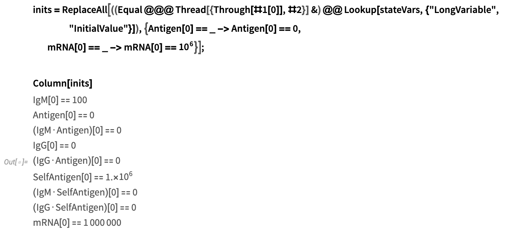
Construct the system of equations for NDSolve, with parameter values and initial conditions:
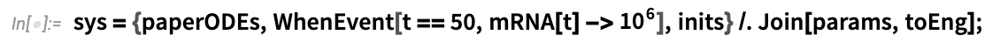
Solve numerically with NDSolve, from t=0 to t=100:
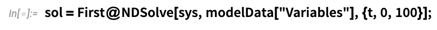
Plot the solution:
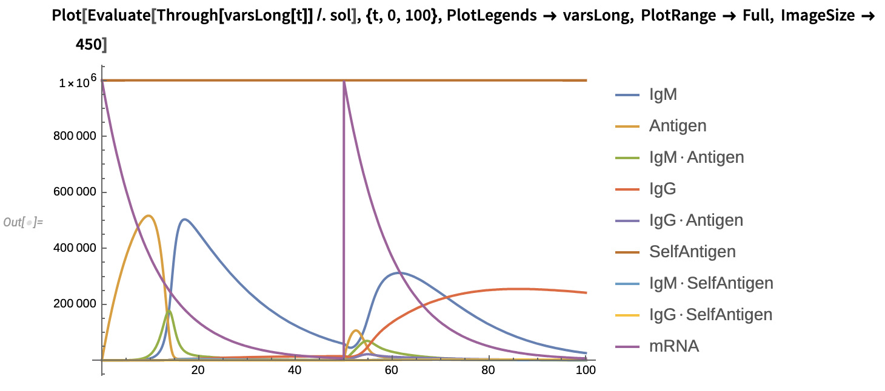